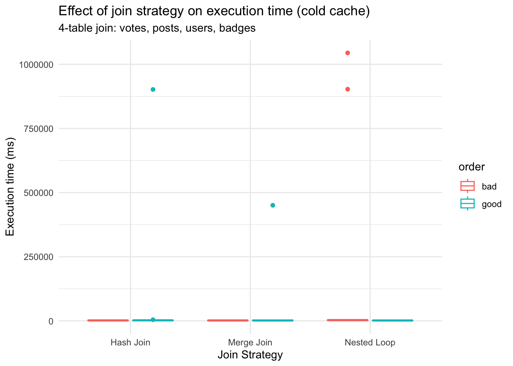

When you write a multi-table JOIN, you specify which tables connect and on what columns — but you do not specify how the database should physically combine them, nor in what order. Those two decisions belong to the query optimizer, and they are the most important influences on how fast a join runs.
This simulation isolates and measures two optimization decisions:
Join strategy — the physical algorithm used to match rows between two tables. PostgreSQL has three: Nested Loop, Hash Join, and Merge Join. For more information on these strategies, see the Joins page.
Join order — the sequence in which tables are brought into the join. Starting from heavily-filtered small tables keeps intermediate results tiny; starting from large unfiltered tables forces the engine to carry millions of rows through every step.
Normally the planner picks both automatically using table statistics and cost estimates.To see the effect of each choice, we override the planner with session-level SET commands, force one strategy and one order at a time, and time the result. This is purely a teaching device — in production you almost always let the planner decide.
We use the Stack Exchange stats dataset (the Cross Validated dump), which has four tables we can chain together: votes, posts, users, and badges.
Setup
We connect to the database, build indexes on the join columns, and confirm the connection with a trivial query. Indexes matter here: a Nested Loop join is only competitive when the inner side can be probed through an index rather than scanned in full.
Show code
library(DBI)library(RPostgres)library(purrr)library(tidyverse)con <-dbConnect( RPostgres::Postgres(),dbname ="stats",host ="127.0.0.1",port =5432,user =Sys.info()[["user"]])# Index the columns that appear in our JOIN ... ON clausesdbExecute(con, "CREATE INDEX IF NOT EXISTS idx_votes_postid ON votes(postid)")
[1] 0
Show code
dbExecute(con, "CREATE INDEX IF NOT EXISTS idx_posts_owneruserid ON posts(owneruserid)")
[1] 0
Show code
dbExecute(con, "CREATE INDEX IF NOT EXISTS idx_badges_userid ON badges(userid)")
[1] 0
Show code
dbGetQuery(con, "EXPLAIN ANALYZE SELECT COUNT(*) FROM votes")
How the planner can be controlled
PostgreSQL exposes a set of session variables that let us switch individual planner behaviours on and off. These are the knobs we use throughout:
enable_nestloop, enable_hashjoin, enable_mergejoin — turn each physical strategy on or off. By enabling exactly one at a time, we force the planner to use that strategy.
join_collapse_limit / from_collapse_limit — when set to 1, the planner is forbidden from reordering the tables and must join them in the literal order written in the FROM clause. This is what lets us dictate join order.
max_parallel_workers_per_gather — set to 0 to turn off parallelism, so timing differences reflect the algorithm and not the number of workers.
A key idea: because join_collapse_limit = 1 makes the engine respect the written order, the same logical query written with its tables in a different sequence becomes a different physical plan.
Both queries below answer the exact same question — count the rows produced by joining votes to their posts, those posts to their owners, and those owners to their badges, keeping only upvotes (votetypeid = 2) on well-scored posts (score > 10) owned by high-reputation users (reputation > 1000). They return identical results. The only difference is the order the tables are listed in.
Good order leads with votes and posts, where the WHERE filters are most selective, so the very first join already works on a shrunken set of rows.
Bad order leads with badges and users, the large tables whose filters don’t bite until later, so early intermediate results stay huge.
Show code
# Good order: filtered/small tables firstsql_good_order <-" SELECT COUNT(*) FROM votes v JOIN posts p ON v.postid = p.id JOIN users u ON p.owneruserid = u.id JOIN badges b ON b.userid = u.id WHERE v.votetypeid = 2 AND p.score > 10 AND u.reputation > 1000"# Bad order: large/unfiltered tables firstsql_bad_order <-" SELECT COUNT(*) FROM badges b JOIN users u ON b.userid = u.id JOIN posts p ON p.owneruserid = u.id JOIN votes v ON v.postid = p.id WHERE v.votetypeid = 2 AND p.score > 10 AND u.reputation > 1000"
A repeatable timing harness (warm cache)
To get a stable measurement we wrap EXPLAIN ANALYZE in a small helper. It runs one throwaway query first to load the relevant data pages into PostgreSQL’s buffer cache (a warm-cache measurement), then runs the query n more times, scraping the Execution Time and Planning Time lines out of each plan.
EXPLAIN ANALYZE is the tool doing the real work here: it actually executes the query and reports how long each step took, as opposed to plain EXPLAIN, which only prints the planner’s estimate.
We now cross the two join orders with the three join strategies, forcing one strategy at a time by toggling the enable_* flags. That gives six timing distributions of ten runs each.
results_merge_good <-run_repeated_warm(con, sql_good_order, 10) |>mutate(join_type ="Merge Join", order ="good")results_merge_bad <-run_repeated_warm(con, sql_bad_order, 10) |>mutate(join_type ="Merge Join", order ="bad")
Show code
bind_rows( results_nest_good, results_nest_bad, results_hash_good, results_hash_bad, results_merge_good, results_merge_bad) |>ggplot(aes(x = join_type, y = exec_ms, color = order)) +geom_boxplot() +labs(title ="Effect of join strategy on execution time",subtitle ="4-table join: votes, posts, users, badges",x ="Join Strategy",y ="Execution time (ms)" ) +theme_minimal()
Warm-cache execution time across the six strategy × order combinations.
What the plot shows. Each strategy responds differently to a bad join order, and that is the whole point. A Nested Loop is the most order-sensitive: for every row from the outer side it probes the inner side, so if the outer side starts large (bad order) the probe count explodes. A Hash Join builds a hash table on one input and streams the other past it, which makes it far more forgiving of a bad starting order. A Merge Join requires both inputs sorted on the join key, so its cost is dominated by sorting and it sits somewhere in between. In short: a good join order helps every strategy, but it rescues the Nested Loop.
Sanity check: the two orders return the same answer
Before trusting the timings, we confirm that “good” and “bad” really are the same query logically — same count — and we list the indexes currently in place.
Show code
dbGetQuery(con, sql_good_order)
Show code
dbGetQuery(con, sql_bad_order)
Show code
dbGetQuery(con, " SELECT tablename, indexname FROM pg_indexes WHERE schemaname = 'public' ORDER BY tablename")
Does it hold up with a cold cache?
Warm-cache numbers reward queries whose pages already sit in memory. A cold-cache test is harsher and closer to a first-of-the-day query. We can’t flush the OS page cache without sudo, but we can approximate a cold session by reconnecting fresh each iteration and issuing DISCARD ALL, which resets all session state.
Because each cold iteration opens its own connection, the per-strategy SET flags must be re-established on the main connection before each batch, and we issue DISCARD ALL between batches to keep them independent.
cold_merge_bad <-run_repeated_cold(con, sql_bad_order, 10) |>mutate(join_type ="Merge Join", order ="bad")
Show code
bind_rows( cold_nest_good, cold_nest_bad, cold_hash_good, cold_hash_bad, cold_merge_good, cold_merge_bad) |>ggplot(aes(x = join_type, y = exec_ms, color = order)) +geom_boxplot() +labs(title ="Effect of join strategy on execution time (cold cache)",subtitle ="4-table join: votes, posts, users, badges",x ="Join Strategy",y ="Execution time (ms)" ) +theme_minimal()

Cold-cache execution time. The order penalty typically widens when pages must be fetched from disk.
Why the planner makes these choices: estimated vs. actual rows
The planner doesn’t time queries — it estimates how many rows each step will emit and picks the cheapest plan based on those estimates. When the estimates are wrong, the plan is wrong. The function below pulls every node out of a plan and compares the planner’s estimated row count to the actual row count, computing a q-error: the ratio of the larger to the smaller. A q-error near 1 means the estimate was accurate; a large q-error means the planner was badly misled at that node.
Show code
extract_estimates <-function(con, sql, label) { plan <-dbGetQuery(con, paste("EXPLAIN ANALYZE", sql))[[1]]# Keep only nodes that report actual timing node_lines <- plan[grep("actual time", plan)]map(node_lines, function(line) { operation <-str_extract(line,"(Nested Loop|Hash Join|Merge Join|Seq Scan|Index Only Scan|Index Scan|Aggregate|Gather)") estimated <-str_extract(line, "rows=([0-9]+)\\s+width") |>str_extract("[0-9]+") |>as.numeric() actual <-str_extract(line, "actual time=[0-9.]+\\.\\.[0-9.]+ rows=([0-9]+)") |>str_extract("[0-9]+$") |>as.numeric() loops <-str_extract(line, "loops=([0-9]+)") |>str_extract("[0-9]+") |>as.numeric()tibble(label = label,operation = operation,estimated = estimated,actual = actual,loops = loops,actual_total = actual * loops,q_error =round(pmax(estimated / actual, actual / estimated), 1) ) }) |>list_rbind() |>filter(!is.na(operation), !is.na(estimated), !is.na(actual))}
# Forced orders: planner not allowed to reorderdbExecute(con, "SET join_collapse_limit = 1")
[1] 0
Show code
good_estimates <-extract_estimates(con, sql_good_order, "forced good order")bad_estimates <-extract_estimates(con, sql_bad_order, "forced bad order")# Auto-optimized: planner free to choose its own orderdbExecute(con, "SET join_collapse_limit = 8")
[1] 0
Show code
auto_estimates <-extract_estimates(con, sql_good_order, "auto-optimized")# Reset session to normal behaviourdbExecute(con, "SET max_parallel_workers_per_gather = 4")
Reading this table. The auto-optimized rows show what the planner does when left alone (join_collapse_limit = 8 lets it reorder up to eight tables freely). Comparing q-errors across the three labels shows where estimation breaks down: nodes deep in the bad-order plan tend to carry the largest q-errors, because each early misestimate compounds as it feeds the next join. This is the mechanism behind the timing differences — a bad order isn’t slow by fiat, it’s slow because the planner’s row estimates drift further from reality at every step, and the actual_total (rows × loops) balloons.
Show code
dbDisconnect(con)
Summary
Nested Loop
Hash Join
Merge Join
How it matches rows
Probe inner table once per outer row
Build hash on one side, stream other
Sort both sides, walk in lockstep
Needs an index?
Strongly benefits from inner index
No
Benefits from pre-sorted inputs
Sensitivity to join order
Very high
Low
Moderate
Best when
Outer side is small after filtering
Inputs are large and unsorted
Inputs already sorted on the key
Two takeaways. First, join order matters most for Nested Loops: leading with your most-filtered tables keeps the outer row count — and therefore the probe count — small. Second, the planner’s choices flow directly from its row estimates, so accurate statistics (and thus low q-error) are what let it pick the right strategy and order on its own. Forcing these settings is useful for understanding the engine, but in practice the lesson is to keep statistics fresh and write selective filters, then trust the planner.